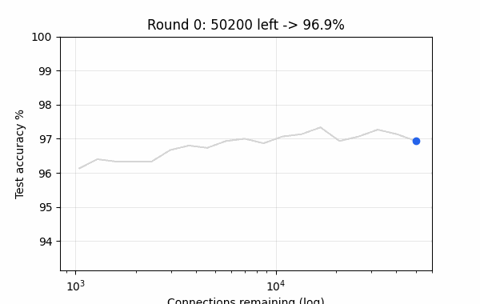
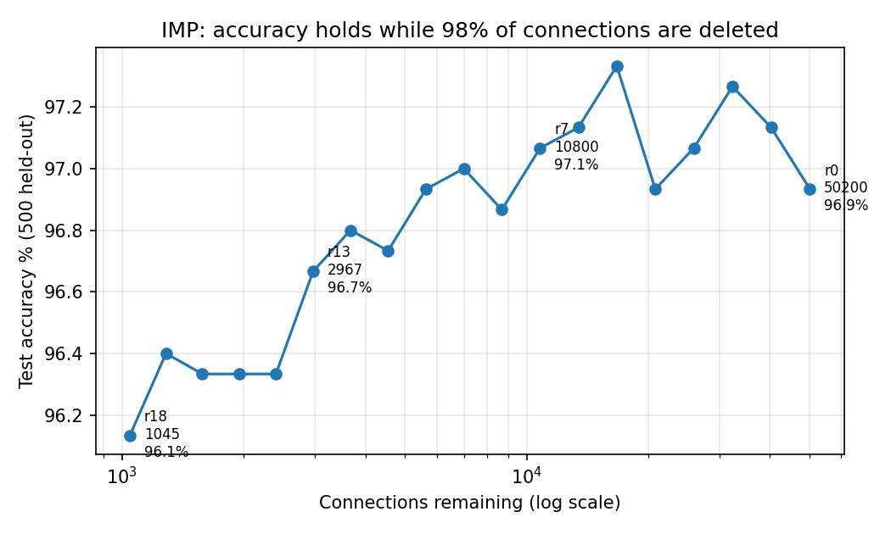
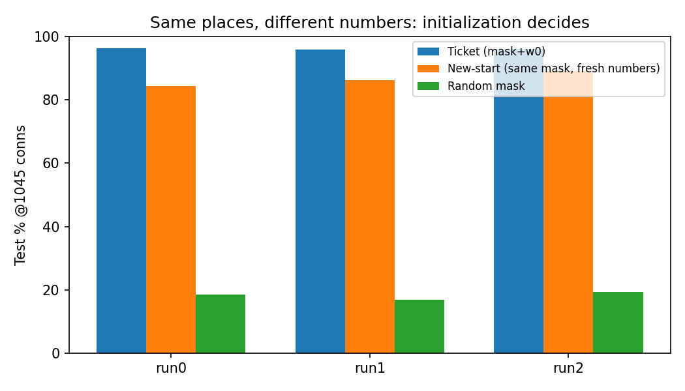
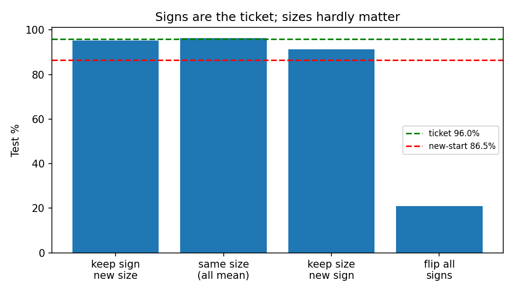
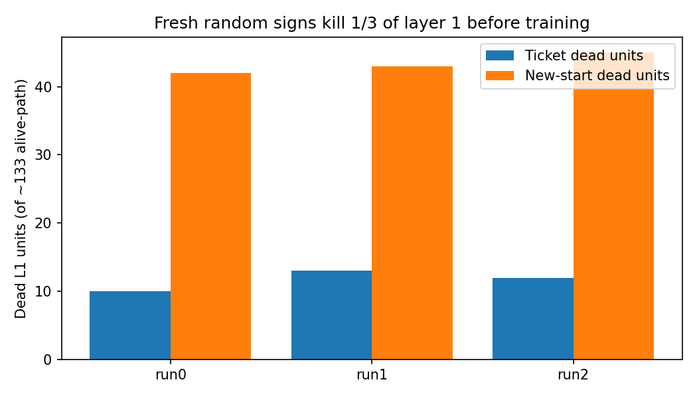
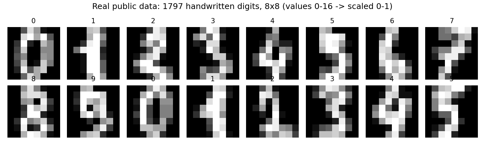

Delete 49 of every 50 wires.
Still read 96% of digits.
Summary: A 50,200-connection network reads handwritten digits at 97.3%. Delete the smallest weights little by little, rewind survivors to their very first random numbers, repeat 18 times — 1,045 wires remain and accuracy is 96.0%. Same 1,045 wires with fresh random numbers: 86.5%. The secret is not the size of the numbers. It is their plus / minus signs, because one wrong minus kills a whole unit forever.
Take the 2-minute quiz Run it in 65 seconds
Public real data: 1,797 pictures, 8×8. No synthetic data. Laptop CPU. Every number below is measured in results/results.json.

Watch: round by round, connections collapse (log scale) while accuracy stays flat. This is the whole paper in 10 seconds.
Dense 97.3% · New-start 86.5%
Pruning did part of training
One minus kills a unit
🌱 Beginner guide — read this and you are a professional
Let's work this out in a step-by-step way to be sure we have the right answer.
What you can use this repo for
Learn backprop, pruning, ReLU death with zero framework magic. Change one flag (zero-mean inputs, LeakyReLU, fan-in floor) and watch the gap move — proposed as Experiments E1–E3.
Copy the masked-SGD + IMP loop as a compression audit template. Benchmark sparsity vs accuracy on your own tabular data in minutes.
Extend to 10 runs, MNIST/CIFAR, late-rewinding, Supermask-only. All seeds, splits, JSON artifacts fixed. Start from
PAPER.md.Results (measured, 3 runs)
| Condition | This repo | Reference telling |
|---|---|---|
| Dense 50,200 | 97.0 / 97.2 / 97.8 | 98.2 mean/10 |
| Ticket @1,045 (r18) | 95.8 / 96.2 / 96.0 | 96.6 @1037 |
| New-start @1,045 | 84.4 / 86.2 / 89.0 | gap opens only at sparsity |
| Random mask | 16.8–19.4 | places alone fail |
| Untrained ticket / fresh | 79–88% vs ~9% | masking ≈ training |
| Small-dense 1,036 | 96.0 / 96.4 / 96.2 | ordinary small net matches |





🎯 Interactive quiz — from scratch to pro (with answers)
Click an answer. You need 5/6 to call yourself pro. Every answer is demonstrated by code in this repo.
Score: 0 / 6
🚀 Quickstart (65 s on a laptop)
pip install -r requirements.txt python -m src.exercise --rounds 3 --runs 3 # 1-minute question: guess, then run python -m src.run_all --rounds 18 --runs 3 --steps 1500 # full benchmark -> results/results.json python tools/make_assets.py # regenerate docs/*.png + docs/demo.gif pytest tests/ -q docker compose up lottery
🌐 View as a website (GitHub Pages): Settings → Pages → Deploy from branch → Branch: main → Folder: / (root) or /docs → Save. Then open / · /preview.html · /docs/preview.html. No build step: preview.html + docs/ are pure static files.
Features
| Feature | What it is |
|---|---|
| 🔢 Exact 50,200 MLP | 64–300–100–10, no biases, NumPy only, He init. Count matches connection for connection. |
| ✂️ Iterative pruning + rewind | 20%/round (10% output), rewind to first numbers, 0–22 rounds. One-shot + random-mask + mag-at-init included. |
| ➕➖ Sign laboratory | keep-sign/new-size, same-size, new-sign, flip-all. Proves signs carry the ticket. |
| 💀 Dead-unit microscope | Counts absorbing ReLUs, plus-fraction, single-wire units, sign preservation, untrained accuracy. |
| 📊 Measured benchmarks | Dense, IMP curve, ticket vs new, small-dense, ablations → results/results.json. |
| 🎁 Exercise + quiz | src/exercise.py (3-round question) + this page's 6-question interactive quiz. |
| 🐳 One-command repro | Dockerfile + docker-compose.yml. Pinned deps, fixed seeds. |